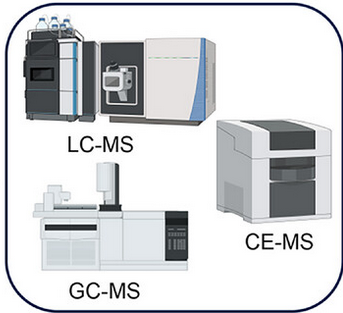

Claudia Balderas
Investigadora en Metabolómica & Ciencia de Datos

Sobre mí
Con más de una década de experiencia en investigación, me he especializado en metabolómica orientada a estudios de nutrición, enfocándome especialmente en el análisis de datos complejos provenientes de espectrometría de masas.
Durante mi carrera, he expandido mi perfil al incorporar habilidades en ciencia de datos aplicadas a otras tecnologías ómicas —genómica, transcriptómica y proteómica— mediante un máster en bioinformática especializado.
Actualmente formo parte del programa Momentum del CSIC, con un contrato Doctor FC2 en el Instituto de Química Orgánica General (IQOG-CSIC), donde colaboro en el desarrollo de un proyecto innovador que aplica algoritmos de Machine Learning y herramientas de Inteligencia Artificial para la detección de fraudes en aceites esenciales.
Me motiva llevar la ciencia a contextos reales, aplicando el conocimiento a problemas concretos que generan un impacto. Disfruto especialmente de los desafíos interdisciplinarios y del trabajo en equipo. A lo largo de mi carrera he tenido la oportunidad de trabajar en distintos países y entornos culturales, lo que ha fortalecido mi capacidad de adaptación y mi habilidad para integrarme y colaborar con equipos diversos. Quienes han trabajado conmigo me describen como una persona cercana, perseverante y resolutiva.
¿Quieres saber más sobre mi trabajo? Escríbeme:
Formación

Doctor FC2 - Programa Momentum (IQOG-CSIC)
ActualmenteInstituto de Química Orgánica General, CSIC

Analista de datos - USTA (ICTAN-CSIC)
2022 - 2024Unidad de Servicio de Técnicas Analíticas, ICTAN-CSIC, Madrid, España
Titulado Superior - Proyecto determinado (ICTAN-CSIC)
2017 - 2020Instituto de Ciencia y Tecnología de Alimentos y Nutrición, CSIC, Madrid, España

Investigadora Postdoctoral
2015 - 2017Universidad de Lund, Lund, Suecia

Investigadora Postdoctoral
2014 - 2015Universidad Federal de Santa Catarina, Florianópolis, Brasil

M.Sc. en Bioinformática
2023 - 2024Universitat Internacional Valenciana (VIU)

Bootcamp en Data Science
Abril 2022 - Agosto 2022The Bridge | Digital Talent Accelerator

Doctorado en Biología y Patología Perinatales
Enero 2009 - Julio 2014Universidad San Pablo CEU - Centro de Metabolómica y Bioanálisis (CEMBIO)
DEA en Estadística e Investigación Operativa
Universidad San Pablo CEU - Centro de Metabolómica y Bioanálisis (CEMBIO)

Licenciatura en Químico Farmacéutico Biólogo (QFB)
Universidad Nacional Autónoma de México (UNAM)
¿Quieres saber más? Descarga mi CV
Competencias
🧬 Metabolómica y Ciencias Ómicas

🌐 Plataformas

🧠 Digitales

Habilidades
💼 Profesionales
- Gestión de proyectos de investigación
- Pensamiento analítico y crítico
- Redacción científica y técnica
- Resolución de problemas complejos
- Adaptación a entornos multidisciplinares
🌟 Personales
- Trabajo en equipo y colaboración
- Comunicación asertiva
- Creatividad y proactividad
- Empatía y escucha activa
- Organización y disciplina
Proyectos
Proyectos actuales donde aplico enfoques de ciencia de datos y metabolómica con algoritmos de aprendizaje automático.

Herramientas digitales basadas en inteligencia artificial para la detección de fraudes en aceites esenciales.
Este proyecto aplica algoritmos de Machine Learning y herramientas de Inteligencia Artificial para identificar muestras adulteradas de aceites esenciales. Utiliza datos obtenidos por GC-MS y modelos predictivos basados en fingerprints espectrales.
El objetivo es desarrollar una herramienta digital que ayude a la industria a verificar la autenticidad de productos naturales de forma rápida y precisa.
Resultados del proyecto

Formación en competencias digitales

Estancias formativas

Formación complementaria

Artículos científicos publicados
🚧 Próximamente
¡Estoy cocinando algo interesante! En esta sección pronto compartiré un nuevo proyecto personal.